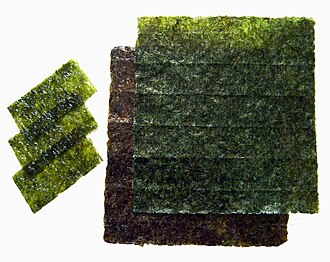

のりの生産量 都道府県ランキング
全20都道府県の順位と収獲量
のりの収獲量が全国で最も多いのは兵庫県で、4万9,368 tです。全国（19万5,048 t）の25%を占めます。

| 順位 | 都道府県 | 収獲量 | 全国に占める割合 |
|---|---|---|---|
| 1位 | 兵庫県 | 4万9,368 t | 25% |
| 2位 | 佐賀県 | 4万2,662 t | 22% |
| 3位 | 福岡県 | 2万7,462 t | 14% |
| 4位 | 熊本県 | 2万6,006 t | 13% |
| 5位 | 宮城県 | 1万643 t | 5.5% |
| 6位 | 三重県 | 8,296 t | 4.3% |
| 7位 | 愛知県 | 8,166 t | 4.2% |
| 8位 | 香川県 | 7,033 t | 3.6% |
| 9位 | 岡山県 | 5,952 t | 3.1% |
| 10位 | 千葉県 | 3,100 t | 1.6% |
| 11位 | 愛媛県 | 1,526 t | 0.8% |
| 12位 | 徳島県 | 1,091 t | 0.6% |
| 13位 | 鹿児島県 | 456 t | 0.2% |
| 14位 | 静岡県 | 449 t | 0.2% |
| 15位 | 福島県 | 291 t | 0.1% |
| 16位 | 神奈川県 | 236 t | 0.1% |
| 17位 | 山口県 | 207 t | 0.1% |
| 18位 | 長崎県 | 98 t | 0.1% |
| 19位 | 沖縄県 | 80 t | 0.0% |
| 20位 | 大分県 | 67 t | 0.0% |
のりの生産量の推移（令和4年〜令和6年）
全国の収獲量は、令和4年の23万2,490 tから令和6年の19万5,048 tへ、16%減りました。1位は入れ替わっています（令和4年は佐賀県、令和5年は兵庫県）。
| 年 | 全国 | 1位 | 2位 | 3位 |
|---|---|---|---|---|
| 令和6年 | 19万5,048 t | 兵庫県4万9,368 t | 佐賀県4万2,662 t | 福岡県2万7,462 t |
| 令和5年 | 20万1,011 t | 兵庫県4万9,836 t | 佐賀県3万7,034 t | 熊本県3万2,180 t |
| 令和4年 | 23万2,490 t | 佐賀県5万4,415 t | 兵庫県5万138 t | 福岡県3万9,558 t |
この数字について
- 分類：海藻の仲間
- 全国の収獲量：19万5,048 t
- この数字が表すもの：収獲量（養殖による収獲量）
- 調査：海面漁業生産統計調査（海面養殖業） 令和6年
- この品目は養殖の統計です。
- 20県分を調査（調査していない県は順位に入りません）
のりの生産量について、よくある質問
- のりの生産量が日本一の都道府県はどこですか？
- 兵庫県です。海面漁業生産統計調査（海面養殖業）（令和6年）で4万9,368 tでした。
- のりの生産量ランキング2位・3位はどこですか？
- 2位は佐賀県（4万2,662 t）、3位は福岡県（2万7,462 t）です。
- のりの生産量ランキング4位・5位はどこですか？
- 4位は熊本県（2万6,006 t）、5位は宮城県（1万643 t）です。のりの全20県の順位は上の表のとおりです。
- のりの全国の生産量はどれくらいですか？
- 19万5,048 t（令和6年）です。